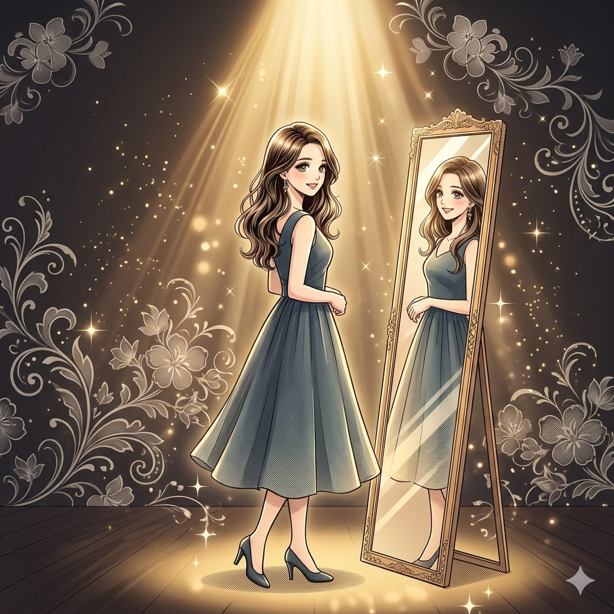

歡迎來到這空間。在追求外在豐盛前，
先看看妳目前的能量狀態。
找回肌膚與身體的自信，由內而外散發光澤。
建立一套屬於自己的豐盛系統，讓收入隨心流動。
我渴望身心靈的平衡，也想要外在與經濟的自由。
點擊這顆鑽石，看看它如何喚醒肌膚
微晶煥膚原理：
這是一種物理性代謝，就像清理老舊能量，讓新細胞重生，重現原生肌膚光采。
嗨你好～我是凱特，我想送妳一份專屬的《身心靈美學對策》。這份對策結合了韓國頂尖的科學修護技術與我們的療癒心法。
請留下妳的 LINE 或 Email，
我將把這份『能量轉化地圖』傳送給妳。